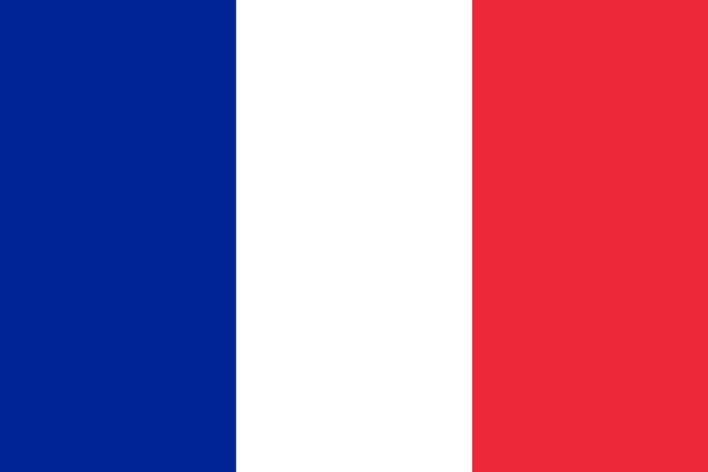
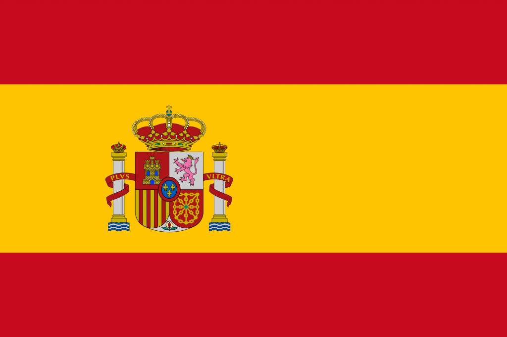

Les pays concernés
FRANCE
L’enseignement supérieure française est reconnu mondialement pour sa qualité et son niveau d’excellence. Ce statut s’explique entre autres par l’importance du budget alloué par l’état français à l’enseignement et à la recherche. Les étudiants inscrits à un établissement d’enseignement supérieur français peuvent choisir parmi un large éventail de formations et ce à tous les niveaux et dans tous les domaines possibles et imaginables. Ainsi, la culture française est reconnue à travers le monde de par sa gastronomie, mode ou encore sa littérature. La langue française est parlée sur tous les continents par des millions de personnes.
ESPAGNE
L’Espagne reçoit de nombreux étudiants étrangers, c’est une destination très prisée des étudiants marocains, et elle entretient d’étroites relations avec l’Amérique du sud. Le système éducatif actuel permet de choisir l’option de formation la plus adaptée à chaque situation, afin d’obtenir une qualification facilitant l’entrée sur le marché du travail dans les meilleures conditions possibles.
ALLEMAGNE

L’Allemagne est connue pour sa force économique en Europe, une riche culture et un grand respect de l’environnement. Elle comprend 320 établissements d’enseignement supérieur répartis entre Universités Techniques, des Fachhochschulen ( Universités des sciences Appliquées) des Beaux-arts et de Musique ainsi que des Fachhochschulen offrant des formations en science d’ingénieur, en sciences économiques, sociales ainsi qu’en design.
UKRAINE

Les étudiants qui souhaitent poursuivre leurs études en Ukraine devraient savoir que l’Ukraine est un pays de l’Europe de l’Est connu principalement par son agriculture, ses grandes montagnes, une économie diversifiée et un réseau de transport assez développé. Ce pays devenant une puissance au développement dynamique a comme langue officielle l’Ukrainien, mais treize autres langues minoritaires sont reconnues dont le russe qui est compris par la majorité des Ukrainiens.
CANADA

Canada est une destination populaire auprès des étudiants internationaux est qu'ils sont attirés par les classements élevés des universités et collèges canadiens. Le système d'éducation au Canada est moins cher que son homologue dans d'autres pays développés comme les États-Unis d'Amérique et le RoyaumeUni.
ÉTATS-UNIS

College, university, institute… quel établissement choisir si on veut étudier aux USA ? Et quelles sont les modalités d’inscription, les équivalences de diplômes ? Autant de questions sur lesquelles il est nécessaire de se pencher pour bien réussir son séjour.
CHINE
Ces dernières années, l'importance de la Chine a augmenté en tant que puissance économique majeure qui a son influence dans le monde, ce qui a accru la position de la Chine à différents niveaux, y compris l'éducation, alors que le nombre d'étudiants internationaux en Chine a doublé au cours des dernières années.